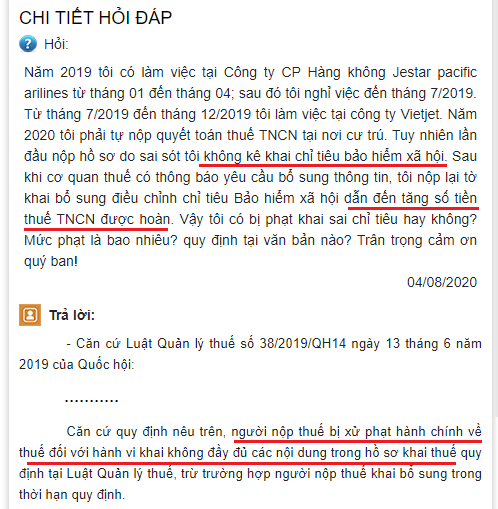
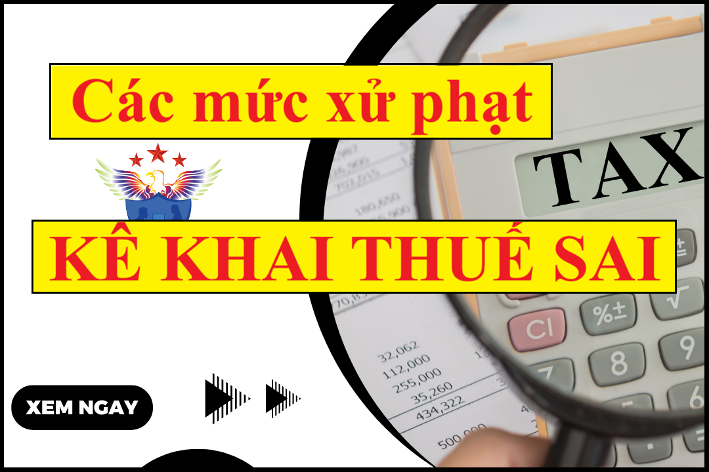

Kê khai thuế sai có bị phạt không? Mức phạt kê khai thuế sai dẫn đến Thiếu số tiền thuế phải nộp hoặc Tăng số tiền thuế được hoàn hoặc Không ảnh hưởng đến số tiền thuế? Những trường không bị xử phạt. Mức phạt tội trốn thuế, gian lận thuế:
A) Mức phạt kê khai thuế sai:
Căn cứ theo điều 16 Nghị định 125/2020/NĐ-CP quy định Mức phạt hành vi khai sai dẫn đến thiếu số tiền thuế phải nộp hoặc tăng số tiền thuế được miễn, giảm, hoàn, cụ thể như sau:
1. Phạt 20% số tiền thuế khai thiếu hoặc số tiền thuế đã được miễn, giảm, hoàn cao hơn so với quy định đối với một trong các hành vi sau đây:
a) Khai sai căn cứ tính thuế hoặc số tiền thuế được khấu trừ hoặc xác định sai trường hợp được miễn, giảm, hoàn thuế dẫn đến thiếu số tiền thuế phải nộp hoặc tăng số tiền thuế được miễn, giảm, hoàn nhưng các nghiệp vụ kinh tế đã được phản ánh đầy đủ trên hệ thống sổ kế toán, hóa đơn, chứng từ hợp pháp;
d) Khai sai dẫn đến thiếu số tiền thuế phải nộp hoặc tăng số tiền thuế được miễn, giảm, hoàn đối với giao dịch liên kết nhưng người nộp thuế đã lập hồ sơ xác định giá thị trường hoặc đã lập và gửi cơ quan thuế các phụ lục theo quy định về quản lý thuế đối với doanh nghiệp có giao dịch liên kết;
đ) Sử dụng hóa đơn, chứng từ không hợp pháp để hạch toán giá trị hàng hóa, dịch vụ mua vào làm giảm số tiền thuế phải nộp hoặc làm tăng số tiền thuế được hoàn, số tiền thuế được miễn, giảm nhưng khi cơ quan thuế thanh tra, kiểm tra phát hiện, người mua chứng minh được lỗi vi phạm sử dụng hóa đơn, chứng từ không hợp pháp thuộc về bên bán hàng và người mua đã hạch toán kế toán đầy đủ theo quy định.
Xem thêm: Mức phạt sử dụng không hợp pháp hóa đơn
a) Buộc nộp đủ số tiền thuế thiếu, số tiền thuế được hoàn, miễn, giảm cao hơn quy định và tiền chậm nộp tiền thuế vào ngân sách nhà nước đối với hành vi quy định tại khoản 1 Điều này.
Trường hợp đã quá thời hiệu xử phạt thì người nộp thuế không bị xử phạt theo quy định tại khoản 1 Điều này nhưng người nộp thuế phải nộp đủ số tiền thuế thiếu, số tiền thuế được hoàn, miễn, giảm cao hơn quy định và tiền chậm nộp tiền thuế vào ngân sách nhà nước theo thời hạn quy định tại khoản 6 Điều 8 Nghị định này;
|
Khoản 6 Điều 8 Nghị định 125/2020/NĐ-CP quy định như sau: Điều 8. Thời hiệu xử phạt vi phạm hành chính về thuế, hóa đơn; thời hạn được coi là chưa bị xử phạt; thời hạn truy thu thuế
...
6. Thời hạn truy thu thuế
a) Quá thời hiệu xử phạt vi phạm hành chính về thuế thì người nộp thuế không bị xử phạt nhưng vẫn phải nộp đủ tiền thuế truy thu (số tiền thuế thiếu, số tiền thuế trốn, số tiền thuế được miễn, giảm, hoàn cao hơn quy định, tiền chậm nộp tiền thuế) vào ngân sách nhà nước trong thời hạn mười năm trở về trước, kể từ ngày phát hiện hành vi vi phạm.
Trường hợp người nộp thuế không đăng ký thuế thì phải nộp đủ số tiền thuế thiếu, số tiền thuế trốn, tiền chậm nộp tiền thuế cho toàn bộ thời gian trở về trước, kể từ ngày phát hiện hành vi vi phạm.
b) Thời hạn truy thu thuế tại điểm a khoản này chỉ áp dụng đối với các khoản thuế theo pháp luật về thuế và khoản thu khác do tổ chức, cá nhân tự khai, tự nộp vào ngân sách nhà nước.
Đối với các khoản thu từ đất đai hoặc khoản thu khác do cơ quan có thẩm quyền xác định nghĩa vụ tài chính của tổ chức, cá nhân thì cơ quan có thẩm quyền xác định thời hạn truy thu theo quy định của pháp luật về đất đai và pháp luật có liên quan nhưng không ít hơn thời hạn truy thu theo quy định tại điểm a khoản này.
|
3. Trường hợp người nộp thuế có hành vi khai sai theo quy định tại điểm a, b, d khoản 1 Điều này nhưng không dẫn đến thiếu số thuế phải nộp, tăng số thuế được miễn, giảm hoặc chưa được hoàn thuế thì không bị xử phạt theo quy định tại Điều này mà xử phạt theo quy định tại khoản 3 Điều 12 Nghị định này.
|
Khoản 3 Điều 12 quy định như sau: Điều 12. Xử phạt hành vi khai sai, khai không đầy đủ các nội dung trong hồ sơ thuế không dẫn đến thiếu số tiền thuế phai nộp hoặc không dẫn đến tăng số tiền thuế được miễn, giảm, hoàn 3. Phạt tiền từ 5.000.000 đồng đến 8.000.000 đồng đối với một trong các hành vi sau đây: a) Khai sai, khai không đầy đủ các chỉ tiêu liên quan đến xác định nghĩa vụ thuế trong hồ sơ thuế; b) Hành vi quy định tại khoản 3 Điều 16; khoản 7 Điều 17 Nghị định này. |
Nghĩa là: Nếu kê khai thuế sai nhưng không dẫn đến thiếu số thuế phải nộp, tăng số thuế được miễn, giảm hoặc chưa hoàn thuế => Thì sẽ bị phạt từ 5.000.000 đến 8.000.000 (Mức trung bình là: 6.500.000)
Cũng theo điều 12 Nghị định 125/2020/NĐ-CP quy định Mức phạt hành vi khai sai, khai không đầy đủ các nội dung trong hồ sơ thuế không dẫn đến thiếu số tiền thuế phai nộp hoặc không dẫn đến tăng số tiền thuế được miễn, giảm, hoàn cụ thể như sau:
1. Phạt tiền từ 500.000 đồng đến 1.500.000 đồng đối với hành vi khai sai, khai không đầy đủ các chỉ tiêu trong hồ sơ thuế nhưng không liên quan đến xác định nghĩa vụ thuế, trừ hành vi quy định tại khoản 2 Điều này.
2. Phạt tiền từ 1.500.000 đồng đến 2.500.000 đồng đối với hành vi khai sai, khai không đầy đủ các chỉ tiêu trên tờ khai thuế, các phụ lục kèm theo tờ khai thuế nhưng không liên quan đến xác định nghĩa vụ thuế.
3. Phạt tiền từ 5.000.000 đồng đến 8.000.000 đồng đối với một trong các hành vi sau đây:
a) Khai sai, khai không đầy đủ các chỉ tiêu liên quan đến xác định nghĩa vụ thuế trong hồ sơ thuế;
b) Hành vi quy định tại khoản 3 Điều 16; khoản 7 Điều 17 Nghị định này.
|
Khoản 3 Điều 16 quy định như sau:
Điều 16. Xử phạt hành vi khai sai dẫn đến thiếu số tiền thuế phải nộp hoặc tăng số tiền thuế được miễn, giảm, hoàn
...
3. Trường hợp người nộp thuế có hành vi khai sai theo quy định tại điểm a, b, d khoản 1 Điều này nhưng không dẫn đến thiếu số thuế phải nộp, tăng số thuế được miễn, giảm hoặc chưa được hoàn thuế thì không bị xử phạt theo quy định tại Điều này mà xử phạt theo quy định tại khoản 3 Điều 12 Nghị định này.
|
|
Khoản 7 Điều 17 quy định như sau:
Điều 17. Xử phạt hành vi trốn thuế
...
7. Các hành vi vi phạm quy định tại điểm b, đ, e khoản 1 Điều này bị phát hiện sau thời hạn nộp hồ sơ khai thuế nhưng không làm giảm số tiền thuế phải nộp hoặc chưa được hoàn thuế, không làm tăng số tiền thuế được miễn, giảm thì bị xử phạt vi phạm hành chính theo quy định tại khoản 3 Điều 12 Nghị định này.
|
4. Biện pháp khắc phục hậu quả:
a) Buộc khai lại và nộp bổ sung các tài liệu trong hồ sơ thuế đối với hành vi quy định tại khoản 1, 2 và điểm a khoản 3 Điều này;
b) Buộc điều chỉnh lại số lỗ, số thuế giá trị gia tăng đầu vào được khấu trừ chuyển kỳ sau (nếu có) đối với hành vi quy định tại khoản 3 Điều này.
Thời hiệu xử phạt vi phạm hành chính về thuế:
Căn cứ Điểm b Khoản 6 Điều 1 Nghị định 310/2025/NĐ-CP có hiệu lực từ ngày 16/01/2026
b) Sửa đổi, bổ sung điểm a b khoản 2 điều 8 Nghị định 125/2020/NĐ-CP như sau:
“a) Thời hiệu xử phạt đối với hành vi vi phạm thủ tục thuế là 02 năm, kể từ ngày thực hiện hành vi vi phạm.
Ngày thực hiện hành vi vi phạm hành chính về thủ tục thuế là ngày kế tiếp ngày kết thúc thời hạn phải thực hiện thủ tục về thuế theo quy định của pháp luật về quản lý thuế, trừ các trường hợp sau đây:
Đối với hành vi quy định tại khoản 1, điểm a, b khoản 2, khoản 3 và điểm a khoản 4 Điều 10; khoản 1, 2, 3, 4 và điểm a khoản 5 Điều 11; khoản 1, 2, 3 và điểm a, b khoản 4, khoản 5 Điều 13 Nghị định này, ngày thực hiện hành vi vi phạm để tính thời hiệu là ngày người nộp thuế thực hiện đăng ký thuế hoặc thông báo với cơ quan thuế hoặc nộp hồ sơ khai thuế.
Đối với hành vi quy định tại điểm c, d khoản 2, điểm b khoản 4 Điều 10; điểm b khoản 5 Điều 11; điểm c, d khoản 4 Điều 13 Nghị định này là hành vi vi phạm hành chính về thuế đang được thực hiện, ngày thực hiện hành vi vi phạm để tính thời hiệu là ngày người có thẩm quyền thi hành công vụ phát hiện hành vi vi phạm.
b) Thời hiệu xử phạt đối với hành vi trốn thuế chưa đến mức truy cứu trách nhiệm hình sự, hành vi khai sai dẫn đến thiếu số tiền thuế phải nộp hoặc tăng số tiền thuế được miễn, giảm, hoàn là 05 năm, kể từ ngày thực hiện hành vi vi phạm.
Ngày thực hiện hành vi khai sai dẫn đến thiếu số tiền thuế phải nộp hoặc tăng số tiền thuế được miễn, giảm, hoàn hoặc hành vi trốn thuế (trừ hành vi tại điểm a khoản 1 Điều 17 Nghị định này) là ngày tiếp theo ngày cuối cùng của thời hạn nộp hồ sơ khai thuế của kỳ tính thuế mà người nộp thuế thực hiện khai thiếu thuế, trốn thuế hoặc ngày tiếp theo ngày cơ quan có thẩm quyền ra quyết định miễn thuế, giảm thuế, hoàn thuế.
Đối với hành vi không nộp hồ sơ đăng ký thuế, không nộp hồ sơ khai thuế tại điểm a khoản 1 Điều 17 Nghị định này là hành vi vi phạm hành chính về thuế đang được thực hiện, ngày thực hiện hành vi vi phạm để tính thời hiệu là ngày người có thẩm quyền thi hành công vụ phát hiện hành vi vi phạm.
Đối với hành vi nộp hồ sơ khai thuế sau 90 ngày quy định tại điểm a khoản 1 Điều 17 Nghị định này thì ngày thực hiện hành vi vi phạm để tính thời hiệu là ngày người nộp thuế nộp hồ sơ khai thuế.”.
Căn cứ Khoản 7 Điều 1 Nghị định 310/2025/NĐ-CP có hiệu lực từ ngày 16/01/2026
Điều 1. Sửa đổi, bổ sung một số điều của Nghị định số 125/2020/NĐ-CP ngày 19 tháng 10 năm 2020 của Chính phủ quy định xử phạt vi phạm hành chính về thuế, hóa đơn
7. Sửa đổi, bổ sung khoản 3 Điều 9 như sau:
“3. Không xử phạt vi phạm hành chính về thuế đối với trường hợp khai sai, người nộp thuế đã khai bổ sung hồ sơ khai thuế theo quy định của pháp luật quản lý thuế và đã tự giác nộp đủ số tiền thuế phải nộp trước thời điểm cơ quan thuế công bố quyết định kiểm tra thuế, cơ quan có thẩm quyền khác công bố quyết định thanh tra, kiểm tra tại trụ sở người nộp thuế hoặc trước thời điểm cơ quan thuế phát hiện không qua kiểm tra thuế tại trụ sở của người nộp thuế hoặc trước khi cơ quan có thẩm quyền khác phát hiện.”.
Xem thêm: Hướng dẫn cách kê khai bổ sung thuế GTGT.
Căn cứ Điều 9 Nghị định 125/2020/NĐ-CP quy định Những trường hợp không xử phạt vi phạm hành chính về thuế, hóa đơn:
1. Không xử phạt vi phạm hành chính về thuế, hóa đơn đối với các trường hợp không xử phạt vi phạm hành chính theo quy định của pháp luật về xử lý vi phạm hành chính.
- Người nộp thuế chậm thực hiện thủ tục thuế, hóa đơn bằng phương thức điện tử do sự cố kỹ thuật của hệ thống công nghệ thông tin được thông báo trên Cổng thông tin điện tử của cơ quan thuế thuộc trường hợp thực hiện hành vi vi phạm do sự kiện bất khả kháng quy định tại khoản 4 Điều 11 Luật Xử lý vi phạm hành chính.
|
Căn cứ theo Điều 11 Luật số 15/2012/QH13 xử lý vi phạm hành chính quy định: Điều 11. Những trường hợp không xử phạt vi phạm hành chính Không xử phạt vi phạm hành chính đối với các trường hợp sau đây:
1. Thực hiện hành vi vi phạm hành chính trong tình thế cấp thiết;
2. Thực hiện hành vi vi phạm hành chính do phòng vệ chính đáng; 3. Thực hiện hành vi vi phạm hành chính do sự kiện bất ngờ; 4. Thực hiện hành vi vi phạm hành chính do sự kiện bất khả kháng; 5. Người thực hiện hành vi vi phạm hành chính không có năng lực trách nhiệm hành chính; người thực hiện hành vi vi phạm hành chính chưa đủ tuổi bị xử phạt vi phạm hành chính theo quy định tại điểm a khoản 1 Điều 5 của Luật này. |
2. Không xử phạt vi phạm hành chính về thuế, không tính tiền chậm nộp tiền thuế đối với người nộp thuế vi phạm hành chính về thuế do thực hiện theo văn bản hướng dẫn, quyết định xử lý của cơ quan thuế, cơ quan nhà nước có thẩm quyền liên quan đến nội dung xác định nghĩa vụ thuế của người nộp thuế (kể cả các văn bản hướng dẫn, quyết định xử lý được ban hành trước ngày Nghị định này có hiệu lực), trừ trường hợp thanh tra, kiểm tra thuế tại trụ sở người nộp thuế chưa phát hiện sai sót của người nộp thuế trong việc khai, xác định số tiền thuế phải nộp hoặc số tiền thuế được miễn, giảm, hoàn nhưng sau đó hành vi vi phạm hành chính về thuế của người nộp thuế bị phát hiện.
4. Không xử phạt hành vi vi phạm thủ tục thuế đối với cá nhân trực tiếp quyết toán thuế thu nhập cá nhân chậm nộp hồ sơ quyết toán thuế thu nhập cá nhân mà có phát sinh số tiền thuế được hoàn; hộ kinh doanh, cá nhân kinh doanh đã bị ấn định thuế theo quy định tại Điều 51 Luật Quản lý thuế.
5. Không xử phạt hành vi vi phạm về thời hạn nộp hồ sơ khai thuế trong thời gian người nộp thuế được gia hạn nộp hồ sơ khai thuế đó.
C) Mức phạt tội trốn thuế:
Căn cứ Điều 17 Nghị định 125/2020/NĐ-CP quy định Xử phạt hành vi trốn thuế, cụ thể như sau:
1. Phạt tiền 1 lần số thuế trốn đối với người nộp thuế có từ một tình tiết giảm nhẹ trở lên khi thực hiện một trong các hành vi vi phạm sau đây:
a) Không nộp hồ sơ đăng ký thuế; không nộp hồ sơ khai thuế hoặc nộp hồ sơ khai thuế sau 90 ngày, kể từ ngày hết thời hạn nộp hồ sơ khai thuế hoặc kể từ ngày hết thời hạn gia hạn nộp hồ sơ khai thuế, trừ trường hợp quy định tại điểm b, c khoản 4 và khoản 5 Điều 13 Nghị định này;
b) Không ghi chép trong sổ kế toán các khoản thu liên quan đến việc xác định số tiền thuế phải nộp, không khai, khai sai dẫn đến thiếu số tiền thuế phải nộp hoặc tăng số tiền thuế được hoàn, được miễn, giảm thuế, trừ hành vi quy định tại Điều 16 Nghị định này;
c) Không lập hóa đơn khi bán hàng hóa, dịch vụ, trừ trường hợp người nộp thuế đã khai thuế đối với giá trị hàng hóa, dịch vụ đã bán, đã cung ứng vào kỳ tính thuế tương ứng; lập hóa đơn bán hàng hóa, dịch vụ sai về số lượng, giá trị hàng hóa, dịch vụ để khai thuế thấp hơn thực tế và bị phát hiện sau thời hạn nộp hồ sơ khai thuế;
d) Sử dụng hóa đơn không hợp pháp; sử dụng không hợp pháp hóa đơn để khai thuế làm giảm số thuế phải nộp hoặc tăng số tiền thuế được hoàn, số tiền thuế được miễn, giảm;
đ) Sử dụng chứng từ không hợp pháp; sử dụng không hợp pháp chứng từ; sử dụng chứng từ, tài liệu không phản ánh đúng bản chất giao dịch hoặc giá trị giao dịch thực tế để xác định sai số tiền thuế phải nộp, số tiền thuế được miễn, giảm, số tiền thuế được hoàn; lập thủ tục, hồ sơ hủy vật tư, hàng hóa không đúng thực tế làm giảm số thuế phải nộp hoặc làm tăng số thuế được hoàn, được miễn, giảm;
e) Sử dụng hàng hóa thuộc đối tượng không chịu thuế, miễn thuế, xét miễn thuế không đúng mục đích quy định mà không khai báo việc chuyển đổi mục đích sử dụng, khai thuế với cơ quan thuế;
g) Người nộp thuế có hoạt động kinh doanh trong thời gian xin ngừng, tạm ngừng hoạt động kinh doanh nhưng không thông báo với cơ quan thuế, trừ trường hợp quy định tại điểm b khoản 4 Điều 10 Nghị định này.
2. Phạt tiền 1,5 lần số tiền thuế trốn đối với người nộp thuế thực hiện một trong các hành vi quy định tại khoản 1 Điều này mà không có tình tiết tăng nặng, giảm nhẹ.
Xem thêm: Mức phạt chậm nộp hồ sơ đăng ký thuế
3. Phạt tiền 2 lần số thuế trốn đối với người nộp thuế thực hiện một trong các hành vi quy định tại khoản 1 Điều này mà có một tình tiết tăng nặng.
4. Phạt tiền 2,5 lần số tiền thuế trốn đối với người nộp thuế thực hiện một trong các hành vi quy định tại khoản 1 Điều này có hai tình tiết tăng nặng.
5. Phạt tiền 3 lần số tiền thuế trốn đối với người nộp thuế thực hiện một trong các hành vi quy định tại khoản 1 Điều này có từ ba tình tiết tăng nặng trở lên.
6. Biện pháp khắc phục hậu quả:
a) Buộc nộp đủ số tiền thuế trốn vào ngân sách nhà nước đối với các hành vi vi phạm quy định tại các khoản 1, 2, 3, 4, 5 Điều này.
Trường hợp hành vi trốn thuế theo quy định tại các khoản 1, 2, 3 ,4, 5 Điều này đã quá thời hiệu xử phạt thì người nộp thuế không bị xử phạt về hành vi trốn thuế nhưng người nộp thuế phải nộp đủ số tiền thuế trốn, tiền chậm nộp tính trên số tiền thuế trốn vào ngân sách nhà nước theo thời hạn quy định tại khoản 6 Điều 8 Nghị định này.
b) Buộc điều chỉnh lại số lỗ, số thuế giá trị gia tăng đầu vào được khấu trừ trên hồ sơ thuế (nếu có) đối với hành vi quy định tại khoản 1, 2, 3, 4, 5 Điều này.
7. Các hành vi vi phạm quy định tại điểm b, đ, e khoản 1 Điều này bị phát hiện sau thời hạn nộp hồ sơ khai thuế nhưng không làm giảm số tiền thuế phải nộp hoặc chưa được hoàn thuế, không làm tăng số tiền thuế được miễn, giảm thì bị xử phạt vi phạm hành chính theo quy định tại khoản 3 Điều 12 Nghị định này.
Bạn xem thêm: Không phát sinh thuế TNCN có phải nộp tờ khai không
Cá nhân tự nộp hồ sơ quyết toán trực tiếp với cơ quan thuế mà có sai sót có phạt không?
Câu trả lời được đăng tải trên Cổng thông tin điện tử - Bộ tài chính như sau:

Nguồn: https://mof.gov.vn/
Kế toán Diệu Tâm xin chúc các bạn thành công!
